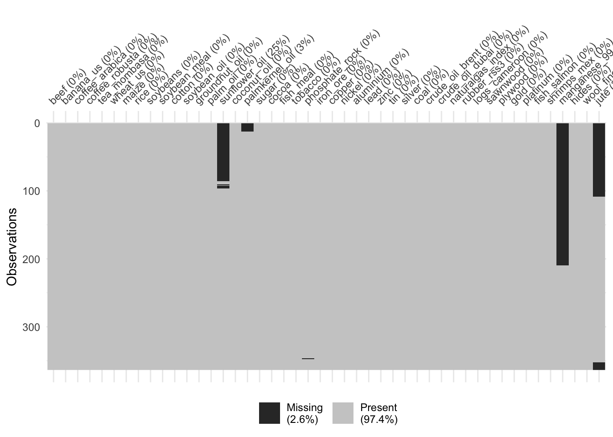

library(ggplot2)
library(openxlsx)
library(jsonlite)
library(httr)
library(readxl)
library(zoo)
library(dplyr)
library(naniar)
project_path <- '~/Documents/GitHub/un-commodity-prices/deliverables/'
# source the functions needed
source(paste0(project_path, 'rscripts/util.R'))
# set paths
read_path <- paste0(project_path, 'data/')
dir_metadata <- 'metadata/'
dir_datasource_2024 <- 'datasource_2024/'
dir_val <- 'validation/'Technical notes: commodity price index computation
This document contains the technical notes for the commodity price index computation. The R code in this document are consistent with 1_compute_validate_index.R.
The index computation requires the following steps, which are explained in details in the next sections.
- load raw data and process
- missing data handling
- compute index from merged dataset from the new source
The validation and plots are recorded in graphics in the other reproducible document.
First you need to load necessary R packages and set the project directory. The directories are recommended to distinguish source code, metadata and data for validation.
Metadata
First load the metadata that contains information for extracting the relevant columns from the international sources.
The content of metadata:
index_sort: 4-digits ID used to compute price indexseries_id: 8 digits ID for specific commoditydescription_long: detailed description of commodity for 2024 sourcesunit_2024: unit used as in the description (2024 sources). This might not be the same as in the 2025 sources.data_source_2024_code,data_source_2024: code and description for data sources used in 2024 version. For example, 5110 is World Bank Commodity markets.data_source_2025_code,data_source_2025: code and description for data sources used in 2025 version.label_display: commodity name, used for graphicslabel_source_2025: commodity name as in their 2025 data sources. It is important to match the correct names to the latest data.check_two_sources: indicator of whether the sources are switched from 2024 to 2025. If yes, then quality check graphics will be produced.keep: indicator of whether we keep the series in the price index computation.within_product_weight: weight for products that share the sameindex_sort. For now only applies to coffee and oil.share_scale: used only for computing products in the subgroups.
metadata <- read.xlsx(paste0(read_path, dir_metadata, 'commodity_metadata.xlsx'),
sheet = 'commodity')
head(metadata, 1) index_sort series_id description_short
1 1005 020100.01 beef
description_long unit_2024
1 Beef, Australia/New Zealand, frozen, CIF US ports ($/kg) usd_per_kg
data_source_2024_code data_source_2024 data_source_2025_code
1 5110 World Bank - Commodity-markets 5110
data_source_2025 label_display label_source_2025
1 World Bank - Commodity-markets Beef Beef.**
check_two_sources keep within_product_weight share_scale
1 <NA> yes 1 1Data collection and processing
In this step we gather the data from their original sources, then carry out some processing. The end result at this step is a data frame with all the commodity series ready to enter the computation.
Data collection
World Bank
We load the World Bank data from an URL (functional as of 2025.4.29)
Do some processing: convert the prices into numeric values.
wb_link <- 'https://thedocs.worldbank.org/en/doc/18675f1d1639c7a34d463f59263ba0a2-0050012025/related/CMO-Historical-Data-Monthly.xlsx'
wb_raw <- read.xlsx(wb_link,
sheet = "Monthly Prices", startRow = 5)
# print the column names
wb_var <- get_info_wb(wb_raw)
# process the raw data
# make the values numeric
wb <- process_data_wb(data = wb_raw)Now select the relevant commodities, as defined by metadata. We choose the ones where data_source_2025_code == 5110 (world bank), no missing (!is.na(label_source_2025) and keep == 'yes' to indicate whether it’s needed.
Please double check whether the variables are what we need!
Some of the labels might have special characters, hence we replace them.
# select relevant series
# based on metadata
# this also has to be within the wb scope
wb_info <- filter(metadata, data_source_2025_code == 5110 & !is.na(label_source_2025) & keep == 'yes')
# process the labels to remove the special characters
wb_labels <- wb_info$label_source_2025
wb_labels <- gsub(',', '.', wb_labels) # substitute the commas
wb_labels <- gsub('\\*', '.', wb_labels) # substitute the star (careful since it's wildcard)
wb_labels <- gsub('%', '.', wb_labels) # substitute the commas
wb_labels [1] "Beef..." "Banana..US"
[3] "Coffee..Arabica" "Coffee..Robusta"
[5] "Tea..Mombasa" "Wheat..US.HRW"
[7] "Maize" "Rice..Thai.5."
[9] "Soybeans" "Soybean.meal"
[11] "Cotton..A.Index" "Soybean.oil"
[13] "Groundnut.oil..." "Palm.oil"
[15] "Sunflower.oil" "Coconut.oil"
[17] "Palm.kernel.oil" "Sugar..world"
[19] "Cocoa" "Fish.meal"
[21] "Tobacco..US.import.u.v." "Phosphate.rock"
[23] "Iron.ore..cfr.spot" "Copper"
[25] "Nickel" "Aluminum"
[27] "Lead" "Zinc"
[29] "Tin" "Silver"
[31] "Coal..Australian" "Crude.oil..Brent"
[33] "Crude.oil..Dubai" "Natural.gas.index"
[35] "Rubber..RSS3" "Logs..Cameroon"
[37] "Sawnwood..Malaysian" "Plywood"
[39] "Gold" "Platinum" Above are the variable names that correspond to the world bank data file. Now we carry out the selection: keep year, period, time, datetime and the commodity labels.
Since some labels are long and have special characters, we set new names that are easier for coding.
# select based on names
wb_narrow <- select(wb, year, period, time, datetime, all_of(wb_labels))
# reset the colnames
# colnames(wb_narrow)[5:ncol(wb_narrow)]
colnames(wb_narrow)[5:ncol(wb_narrow)] <- wb_info$description_short
colnames(wb_narrow)[5:ncol(wb_narrow)] [1] "beef" "banana_us" "coffee_arabica" "coffee_robusta"
[5] "tea_mombasa" "wheat_us" "maize" "rice"
[9] "soybeans" "soybean_meal" "cotton" "soybean_oil"
[13] "groundnut_oil" "palm_oil" "sunflower_oil" "coconut_oil"
[17] "palmkernel_oil" "sugar" "cocoa" "fish_meal"
[21] "tobacco" "phosphate_rock" "iron_ore" "copper"
[25] "nickel" "aluminium" "lead" "zinc"
[29] "tin" "silver" "coal" "crude_oil_brent"
[33] "crude_oil_dubai" "naturalgas_index" "rubber_rss3" "logs_cameroon"
[37] "sawnwood" "plywood" "gold" "platinum" IMF
Carry out similar tasks for the IMF data.
One thing to note is that IMF data API is subject to change in the near future. Please double check if the link is still functional.
imf_link <- 'https://www.imf.org/-/media/Files/Research/CommodityPrices/Monthly/external-data.ashx'
# imf_raw <- read_excel(paste0('YOUR_PATH', "imf.xls"))
imf_loc <- tempfile()
download.file(imf_link, imf_loc)
# read from temporary path
imf_raw <- read_excel(path = imf_loc)New names:
• `POILAPSP` -> `POILAPSP...17`
• `POILAPSP` -> `POILAPSP...45`
• `` -> `...89`
• `` -> `...90`
• `` -> `...91`
• `` -> `...92`
• `` -> `...93`
• `` -> `...94`
• `` -> `...95`# check variables
imf_var <- get_info_imf(imf_raw)
# View(imf_var)
# process data, conver to numerics
imf <- process_data_imf(imf_raw)The last few columns are a bit messy, we manually set the name for Manganese. Please double check if this is what you need!
# need to fill in Manganese
imf <- fill_imf_name(data = imf,
keyword = 'Mang',
col_to_fill = '...92',
fill_name = 'PMANG')Select the variables defined in metadata: where data_source_2025_code == 2311.
# select
imf_info <- filter(metadata, data_source_2025_code == 2311 &
!is.na(label_source_2025) & keep == 'yes')
imf_info index_sort series_id description_short
1 1010 030212.01 fish_salmon
2 1011 030613.01 shrimps_mex
3 3002 260200.02 manganese_99
4 2006 410100.01 hides
5 2004 510100.03 wool_fine
description_long
1 Salmon, fresh, fish-farm bred, export price, Norway ($/kg)
2 Shrimps, brown, no. 1, shell-on, headless, Mexico ($/kg)
3 Manganese 99.7% electrolytic manganese flake, free market, in warehouse ($/t)
4 Cattle hides, US Chicago packer's heavy native steers, FOB shipping point (¢/lb.)
5 Fine wool, 19 Micron, AWEX auction price, Australia ($/t)
unit_2024 data_source_2024_code data_source_2024
1 usd_per_kg 7801 Statistics Norway
2 usd_per_kg 5110 World Bank - Commodity-markets
3 usd_per_tonne 6801 Metal Bulletin Limited
4 cent_per_lb 2311 IMF - Primary Commodity Prices
5 usd_per_tonne 8001 Australian Wool Innovation (AWI)
data_source_2025_code data_source_2025 label_display
1 2311 IMF - Primary Commodity Prices Fish (Salmon)
2 2311 IMF - Primary Commodity Prices Shrimps (Thailand)
3 2311 IMF - Primary Commodity Prices Manganese 99.7
4 2311 IMF - Primary Commodity Prices Hides
5 2311 IMF - Primary Commodity Prices Wool (fine)
label_source_2025 check_two_sources keep within_product_weight share_scale
1 PSALM yes yes 1 1
2 PSHRI <NA> yes 1 1
3 PMANG yes yes 1 1
4 PHIDE yes yes 1 1
5 PWOOLF yes yes 1 1# select relevant columns
imf_narrow <- select(imf, year, datetime, all_of(imf_info$label_source_2025))
# reset name
colnames(imf_narrow)[3:ncol(imf_narrow)][1] "PSALM" "PSHRI" "PMANG" "PHIDE" "PWOOLF"colnames(imf_narrow)[3:ncol(imf_narrow)] <- imf_info$description_shortFAO
The mechanism is slightly different for FAO. First grab the name (Jute), then query it based on uuid.
# first get metadata
fpma_api <- GET("https://fpma.fao.org/giews/v4/price_module/api/v1/FpmaSerieInternational/")
fpma_raw <- fromJSON(rawToChar(fpma_api$content))
# str(fpma_raw)
fpma_data <- fpma_raw$results
# get information for jute
# do the same for other commodity if needed
jute_info <- filter(fpma_data, grepl('Jute', commodity_name))
jute_info uuid iso3_country_code country_name
1 5a272e65-e437-41c2-bcb0-f229dc14f47b IPS INTERNATIONAL PRICES
periodicity market market_name market_info market_type
1 monthly, 2024-04-01, 2004-01-01 1750 Bangladesh Export
admin_unit admin_unit2 commodity
1 2711
commodity_name
1 Jute BWD (f.o.b. Mongla, at sight)/from 2006 Jute BTD (f.o.b Bangladesh Port)
commodity_info commodity_image commodity_code commodity_start_date
1 NA CMM530300 1
alternative_code alternative_name source
1 323
source_name
1 Bangladesh Jute Mills Corporation/The Public Ledger/Wilhelm G. Clasen (WGC)
source_url price_type_id price_type currency measure_unit measure_unit_label
1 11 EXPORT USD 3555 tonne
conversion_factor
1 0.001We use the uuid to get the jute data. Double check the period where the data is available (it is only from 2004.1 to 2024.1).
jute_raw <- GET(paste0("https://fpma.fao.org/giews/v4/price_module/api/v1/FpmaSeriePrice/",jute_info$uuid,"/"))
jute <- fromJSON(rawToChar(jute_raw$content))
# only from 2004.1 to 2024.1
head(jute$datapoints, 3) id price_value price_value_real price_value_dollar conversion_factor
1 5070349 840 NA 840 0.001
2 5070348 780 NA 780 0.001
3 5070347 820 NA 820 0.001
date periodicity
1 2024-04-01 monthly
2 2024-03-01 monthly
3 2024-02-01 monthlytail(jute$datapoints, 3) id price_value price_value_real price_value_dollar conversion_factor
242 612508 245 NA 245 0.001
243 612507 245 NA 245 0.001
244 612506 230 NA 230 0.001
date periodicity
242 2004-03-01 monthly
243 2004-02-01 monthly
244 2004-01-01 monthlyConvert to proper format to prepare for merging.
jute <- data.frame(jute$datapoints[, c('date', 'price_value_dollar')])
colnames(jute)[1] <- 'datetime'
colnames(jute)[2] <- 'jute'
jute$datetime <- as.Date(jute$datetime)Merge
We carry out a left_join on the three data sets. The keywords that we join by are the date times.
dcommodity <- left_join(wb_narrow, imf_narrow) |>
left_join(jute)Joining with `by = join_by(year, datetime)`
Joining with `by = join_by(datetime)`colnames(dcommodity) [1] "year" "period" "time" "datetime"
[5] "beef" "banana_us" "coffee_arabica" "coffee_robusta"
[9] "tea_mombasa" "wheat_us" "maize" "rice"
[13] "soybeans" "soybean_meal" "cotton" "soybean_oil"
[17] "groundnut_oil" "palm_oil" "sunflower_oil" "coconut_oil"
[21] "palmkernel_oil" "sugar" "cocoa" "fish_meal"
[25] "tobacco" "phosphate_rock" "iron_ore" "copper"
[29] "nickel" "aluminium" "lead" "zinc"
[33] "tin" "silver" "coal" "crude_oil_brent"
[37] "crude_oil_dubai" "naturalgas_index" "rubber_rss3" "logs_cameroon"
[41] "sawnwood" "plywood" "gold" "platinum"
[45] "fish_salmon" "shrimps_mex" "manganese_99" "hides"
[49] "wool_fine" "jute" Quality checks
It can be very convenient to visualize the data missingness.
# visualise which series are missing
commodity_only <- select(dcommodity, -c(year, period, time, datetime))
vis_miss(commodity_only) 
We can see that sunflower_oil, palmkernel_oil, manganese_99 and jute have quite some missing values. We should be careful about what to do for each case.
- historical missing can be handled by using already existing data from other sources. If multiple data sources have similar values for most of the time periods, they can be used directly (sunflower oil, palm kernel oil, manganese).
- discontinued data: depending on the importance of the product in the index computation, it can be completely dropped (jute).
The missingness of prices should be monitored constantly as data sources might change.
Fill missing period
We create a copy of the data for backfilling, in this way we keep track of the original data for comparison.
dcommodity_filled <- dcommodityManganese
For manganese, we use the historical data from Metal Bulletin (6801). This is already processed and saved in prices_2024_compare.rds, so we load the data and retrieve the proper column.
When it comes to backfilling, we use the function rows_patch from dplyr. This function conveniently matches the common column (date time) and fills the missing.
We save it in the dcommodity_filled dataframe.
# missing period in the wb data
manga_mp <- check_missing_period(data = dcommodity, tag = 'manganese_99')
manga_missing_period <- manga_mp$missing_datetime
# load comparison data
dcompare <- readRDS(paste0(read_path, dir_val, 'prices_2024_compare.rds'))
# manganese, use the one for 260200.02
manga_compare <- filter(
dcompare, CommodityProduct == '260200.02' & dtime %in% manga_missing_period
)|> select(manganese_99 = Value,
datetime = dtime)
# select the price in the original data
manga_dcommodity <- select(dcommodity_filled,
manganese_99, datetime)
# patch the same period in the comparison data
manga_filled <- rows_patch(manga_dcommodity, manga_compare, by = 'datetime')
# plot(manga_filled$manganese_99)
# replace the filled series in dcommodity
dcommodity_filled$manganese_99 <- manga_filled$manganese_99Sunflower oil
For sunflower oil, we use a comparable historical data from IMF.
sunflower_dcommodity <- select(dcommodity_filled,
sunflower_oil, datetime)
sunflower_mp <- check_missing_period(data = dcommodity, tag = 'sunflower_oil')
sunflower_missing_period <- sunflower_mp$missing_datetime
# select sunflower oil in the imf data
sunflower_imf <- select(imf, sunflower_oil = PSUNO, datetime) |>
filter(datetime %in% sunflower_missing_period)
# patch the same period in the comparison data
sunflower_filled <- rows_patch(sunflower_dcommodity, sunflower_imf, by = 'datetime')
# plot(sunflower_filled$sunflower_oil)
# replace the filled series in dcommodity
dcommodity_filled$sunflower_oil <- sunflower_filled$sunflower_oilPalm kernel oil
For this product, we do not have any product that is directly replaceable. We can use palm oil from IMF, which is close enough.
palmkernel_dcommodity <- select(dcommodity_filled,
palmkernel_oil, datetime)
palmkernel_mp <- check_missing_period(data = dcommodity, tag = 'palmkernel_oil')
palmkernel_missing_period <- palmkernel_mp$missing_datetime
# select palm oil in the imf data
palm_imf <- select(imf, palmkernel_oil = PPOIL, datetime) |>
filter(datetime %in% palmkernel_missing_period)
# patch the same period in the comparison data
palmkernel_filled <- rows_patch(palmkernel_dcommodity, palm_imf, by = 'datetime')
# replace the filled series in dcommodity
dcommodity_filled$palmkernel_oil <- palmkernel_filled$palmkernel_oilPrice index computation
This is the step for computing the prices using the weights. One important thing to note is that the weight matrix does not have the 8 digits code for individual series, so we need to have one additional step of linking these two tables: metadata and weights.
Prepare weights
Weights
weights <- read.xlsx(paste0(read_path, dir_metadata, 'weights.xlsx'))
head(weights) index_sort group subgroup index_description w s
1 1001 ALL FOOD FOOD Wheat 2206573845 0.001966377
2 1002 ALL FOOD FOOD Maize 10035445721 0.008943037
3 1003 ALL FOOD FOOD Rice 12086634062 0.010770943
4 1004 ALL FOOD FOOD Sugar 18309075031 0.016316040
5 1005 ALL FOOD FOOD Bovine meat 10935950196 0.009745517
6 1006 ALL FOOD FOOD Bananas 7314470514 0.006518253
available
1 yes
2 yes
3 yes
4 yes
5 yes
6 yesThe content of weight data:
index_sort: 4-digits ID used to compute price index. Link to metadata.group: first level of grouping of commoditysubgroup: second level of groupingindex_description: description of the index. This does not necessarily link to metadata; however it is indicative to the product used.wands: numeric values used to compute the weighted sum of the index.ssum up to 1, whilewfor each product divided by the total sum of w equals tos(hence equivalent).available: indicator of whether this product is available in the data source in 2025.
# shares sum up to 1
weights$s |> sum()[1] 1Combine weight with metadata
This step produces a table that provides information that links price series to their weights.
m <- dplyr::filter(metadata, keep == 'yes') |>
select(index_sort,
series_id,
description_short,
within_product_weight,
share_scale)
m |> head() index_sort series_id description_short within_product_weight share_scale
1 1005 020100.01 beef 1.0 1
2 1010 030212.01 fish_salmon 1.0 1
3 1011 030613.01 shrimps_mex 1.0 1
4 1006 080300.01 banana_us 1.0 1
5 1101 090100.03 coffee_arabica 0.4 1
6 1101 090100.05 coffee_robusta 0.6 0ws <- dplyr::filter(weights, available == 'yes') |>
select(index_sort,
group,
subgroup,
index_description,
s)
ws |> head() index_sort group subgroup index_description s
1 1001 ALL FOOD FOOD Wheat 0.001966377
2 1002 ALL FOOD FOOD Maize 0.008943037
3 1003 ALL FOOD FOOD Rice 0.010770943
4 1004 ALL FOOD FOOD Sugar 0.016316040
5 1005 ALL FOOD FOOD Bovine meat 0.009745517
6 1006 ALL FOOD FOOD Bananas 0.006518253Within product weights
Double check how many rows there are. They might be different, but it is not a big problem: we have a mechanism to cope with products that share the same index sort code, as explained below.
c(nrow(m), nrow(ws))[1] 46 43The within-product weight is defined in the metadata. For most products this value is 1, exceptions apply to two products:
- index sort code 1101: Coffee Arabica (090100.03) and Robusta (090100.05) takes up 40% and 60%
- index sort code 4201: Crude oil - Brent (270900.01) and Dubai (270900.02) takes up 50% each
Special case:
- index sort code 2010: Rubber RSS3 (400100.02) and TSR20 (400100.01). We use RSS3 as it is complete, while TSR20 is only available from 1999 in World Bank Data.
Now join the selected columns of weight and metadata together by index_sort.
# only 1101 (coffee), 4201 (crude oil) have more frequency
table(m$index_sort) |> sort()
1001 1002 1003 1004 1005 1006 1008 1010 1011 1102 1103 1201 1202 1203 1204 1206
1 1 1 1 1 1 1 1 1 1 1 1 1 1 1 1
1207 1208 2001 2002 2003 2004 2005 2006 2007 2008 2009 2010 3001 3002 3003 3004
1 1 1 1 1 1 1 1 1 1 1 1 1 1 1 1
3005 3006 3007 3008 3009 3101 3102 3103 4001 4101 1101 4201
1 1 1 1 1 1 1 1 1 1 2 2 M <- full_join(m, ws, by = 'index_sort')
head(M,3) index_sort series_id description_short within_product_weight share_scale
1 1005 020100.01 beef 1 1
2 1010 030212.01 fish_salmon 1 1
3 1011 030613.01 shrimps_mex 1 1
group subgroup index_description s
1 ALL FOOD FOOD Bovine meat 0.009745517
2 ALL FOOD FOOD Fish 0.002242046
3 ALL FOOD FOOD Crustaceans 0.010791602Compute index
Now we compute the index. First we need to base the prices at 2015 as 100: compute the average price for each product for 2015, and merge it back to M matrix. These 2015 basis values are used as the denominator when we compute the index.
# call it a different name
dprices <- dcommodity_filled
basis_2015 <- filter(dprices, year == 2015) |>
select(-c(year, period, time, datetime)) |>
apply(MARGIN = 2, mean)
basis_2015 <- data.frame(basis_2015)
basis_2015$description_short <- rownames(basis_2015)
head(basis_2015) basis_2015 description_short
beef 4.5591542 beef
banana_us 0.9569142 banana_us
coffee_arabica 3.5260692 coffee_arabica
coffee_robusta 1.9411679 coffee_robusta
tea_mombasa 2.9646806 tea_mombasa
wheat_us 204.4491286 wheat_us# merge it to M
M2 <- left_join(M, basis_2015, by = 'description_short')Select the relevant columns from the prices (by dropping year, period, time, datetime).
# select only relevant columns
dcwide <- select(dprices, -c(year, period, time, datetime))
# still want to keep track of the time information
rownames(dcwide) <- dprices$datetimeDivide the original values by the 2015 basis, then multiply by their weights. For the special cases (coffee, crude oil), the within_product_weight is used to combine the weighted sum of the two sub-products.
Index for one product group
UNCTAD has many distinct subgroups for products, hence we need to match the variables for each group.
# grouping information is in the validation_unctad tab
grouping <- read.xlsx(paste0(read_path, dir_metadata, 'weights.xlsx'),
sheet = 'validation_unctad')
grouping unctad_name
1 All.groups_Index_Base_2015_Value
2 All.food_Index_Base_2015_Value
3 Food_Index_Base_2015_Value
4 Tropical.beverages_Index_Base_2015_Value
5 Vegetable.oilseeds.and.oils_Index_Base_2015_Value
6 Agricultural.raw.materials_Index_Base_2015_Value
7 Minerals..ores.and.metals_Index_Base_2015_Value
8 Minerals..ores.and.non.precious.metals_Index_Base_2015_Value
9 Precious.metals_Index_Base_2015_Value
10 Fuels_Index_Base_2015_Value
11 Tropical.beverages.and.food_Index_Base_2015_Value
12 All.groups.excl..fuels_Index_Base_2015_Value
13 All.groups.excl..precious.metals_Index_Base_2015_Value
14 All.groups.excl..precious.metals.and.fuels_Index_Base_2015_Value
group_name select_group_from
1 all level_1
2 all_food level_1
3 food level_2
4 tropical_beverages level_2
5 vegetable_oilseeds_oil level_2
6 agricultural_raw_material level_1
7 minerals_ore_metal level_1
8 minerals_ore_metal_non_precious_metal level_2
9 precious_metal level_2
10 fuels level_1
11 tropical_beverages_food level_2
12 all_excl_fuels level_1
13 all_excl_precious_metal level_2
14 all_excl_precious_metal_fuels level_2Let us test it for the first combination: all products.
# select one combination
# from 1 to 14
cg <- query_commodity_group(target_group_info = grouping[1,])
cg$target_group_info
unctad_name group_name select_group_from
1 All.groups_Index_Base_2015_Value all level_1
$commodity_groups
[1] "ALL FOOD" "AGRICULTURAL RAW MATERIALS"
[3] "ALL MINERALS, ORES AND METALS" "FUELS"
$weight_ref_column
[1] "group"The function compile_index takes in three arguments:
d_price: the prices for individual productsd_weight_unscaled: the weight matrix (after combining metadata)commodity_group: group information used to select and rescale the index
index_onegroup <- compile_index(d_price = dcwide,
d_weight_unscaled = M2,
commodity_group = cg)compute index for group: all
processing product 1 : beef
processing product 2 : fish_salmon
processing product 3 : shrimps_mex
processing product 4 : banana_us
processing product 5 : coffee_arabica
processing product 6 : tea_mombasa
processing product 7 : wheat_us
processing product 8 : maize
processing product 9 : rice
processing product 10 : soybeans
processing product 11 : soybean_meal
processing product 12 : cotton
processing product 13 : soybean_oil
processing product 14 : groundnut_oil
processing product 15 : palm_oil
processing product 16 : sunflower_oil
processing product 17 : coconut_oil
processing product 18 : palmkernel_oil
processing product 19 : sugar
processing product 20 : cocoa
processing product 21 : fish_meal
processing product 22 : tobacco
processing product 23 : phosphate_rock
processing product 24 : iron_ore
processing product 25 : manganese_99
processing product 26 : copper
processing product 27 : nickel
processing product 28 : aluminium
processing product 29 : lead
processing product 30 : zinc
processing product 31 : tin
processing product 32 : silver
processing product 33 : coal
processing product 34 : crude_oil_brent
processing product 35 : naturalgas_index
processing product 36 : rubber_rss3
processing product 37 : hides
processing product 38 : logs_cameroon
processing product 39 : sawnwood
processing product 40 : plywood
processing product 41 : wool_fine
processing product 42 : gold
processing product 43 : platinum
processing product 44 : coffee_robusta
processing product 45 : crude_oil_dubai head(index_onegroup$index)1995-01-01 1995-02-01 1995-03-01 1995-04-01 1995-05-01 1995-06-01
45.86073 46.50581 46.63123 47.93610 47.44628 46.59248 Index for other groups
Please read through the R code in 1_compute_valdiate_index.R section 4.